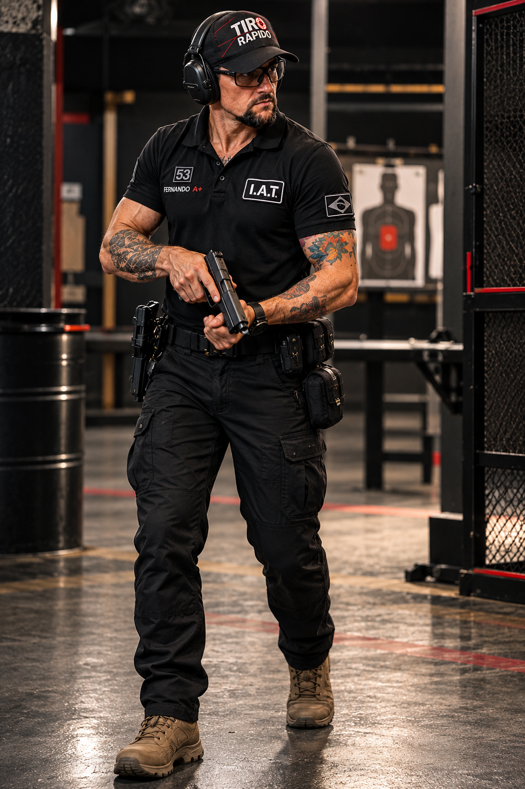

Formação
Conhecimento documentado
Formações em Armamento e Tiro, Boxe, artes marciais, primeiros socorros e áreas complementares.
Instrutor Qualificado com formação multidisciplinar aplicada ao tiro esportivo, ensino, segurança e preparação.
Formações em Armamento e Tiro, Boxe, artes marciais, primeiros socorros e áreas complementares.
Demonstrar, observar, corrigir, avaliar e adaptar a comunicação ao aluno.
Disciplina, prevenção e capacitação em primeiros socorros fazem parte da proposta profissional.
Boxe, Muay Thai, Jiu-Jitsu, Krav Maga, preparação física e repertório corporal complementam a trajetória.
O trabalho profissional é apresentado como integração de competências, com foco em instrução responsável e evolução contínua.
